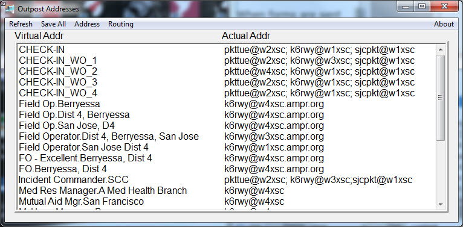
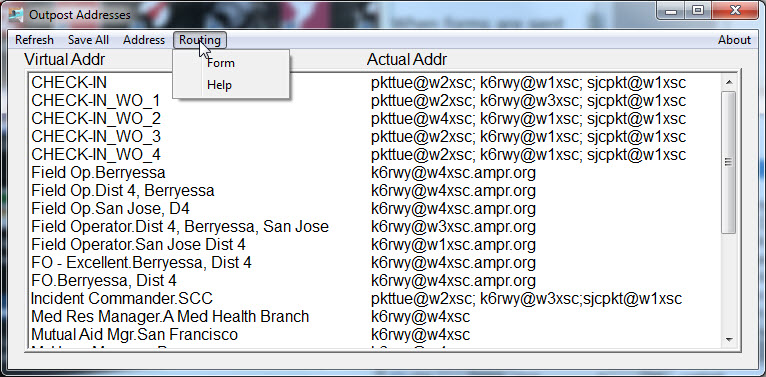

Address Book
|  |
| Select address record and use right mouse popup menu to copy field of interest to scratch pad. |
When forms are sent by Outpost the "To" field and "Loc" field describe the recipient of the form but do not describe the actual packet address. The actual packet address is added after the browser sends the form to Outpost. Fortunately the log contains both addresses in a convenient manner to capture them together.
The OPaddress application may be started (as an option) by PreOutpost, cobbles up the address records held by Outpost and presents them in an independent window. Furthermore, when the refresh menu item on the window is selected (left mouse click) OPaddress will capture any new form addresses in the current day's log and present them.
Each entry presents the "virtual" address (the address in a form), the "location/organization" and the "actual" address for each entry. Each entry takes one line. The dialog box may be resized and moved as needed by the user. The position and size are remembered from on instantiation to the next.
Using and entry may be done by copying one of the three fields into the scratch pad using the right mouse menu or one of three control characters (keyboard shortcuts). First select the line (Address Record) of interest and then either press the right mouse button or use one of keyboard shortcuts:
- Ctrl+C -- Copy Actual Address
- Ctrl+B -- Copy Virtual Address
- Ctrl+L -- Copy Location/Organization
The address menu includes the commnds:
- New -- Create a new Address entry
- Edit -- Allow editing the currently selected address entry
- Delete -- Delete the currently selected entry after confirming in a dialog box
Since OPaddress may affect entries already created in Outpost saving the new entries (or modified entries) is deferred. While the application is running all entries that appear are held in the application. No changes, additions or deletions in the Outpost files are performed until the SaveAll menu item is selected. Alternatively, when the application is closed a prompt to save the entries will be displayed before exiting.
Routing
|  |
| Routing information is available from the Address Book |
When the form is missing routing information one can retrieve the routing slip and a cheat sheet for the destination of various forms by using one of the routing menu items on the Address Book.
The first time either Routing Menu item is accessed the program will search for AcroRd32.exe. It may take several minutes to complete this search. After the first successful access the commands will complete more quickly.